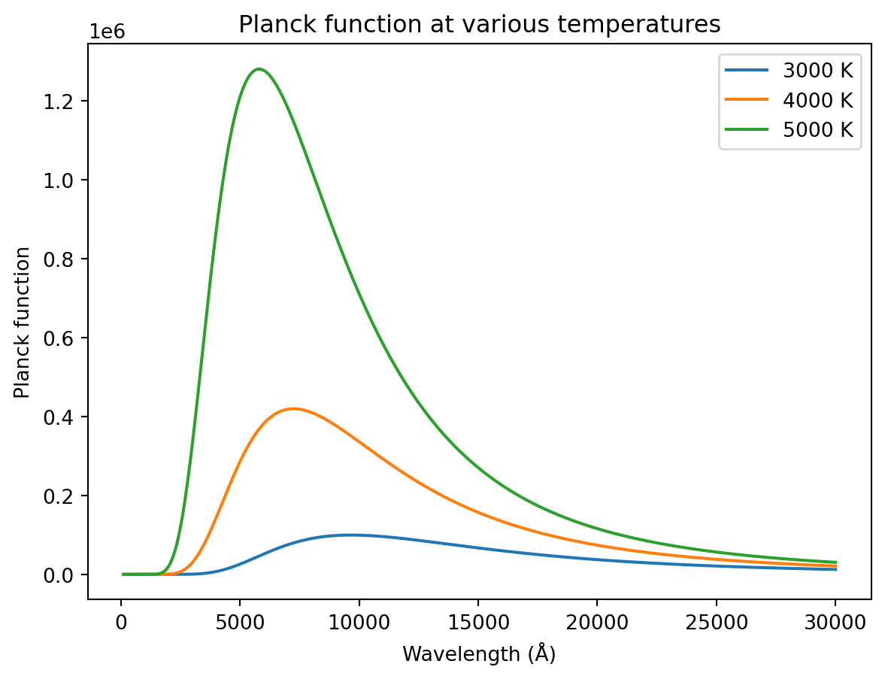

In this class, we will be employing the modern “C” language which is commonly used for scientific programming1. “C” is closely related to C++ which is an Object Oriented language. It turns out that, while occasionally useful, the Object Oriented properties of C++ are not required for most types of scientific programming. In addition, acquiring a working knowledge of C++ can involve quite a steep learning curve. The object of this class is to get you up to speed as rapidly as possible in a powerful and versatile programming language (we have about three weeks to do that!) and then to introduce you to a number of numerical techniques useful and essential for work in physics and engineering. Some of you will already have a working knowledge of C or C++. If you don’t, the following three chapters will get you started. Otherwise, consider them a quick refresher.
Read: The C Programming Language: Chapter 1.
1.1 Computer Memory and Variables
Basically speaking, a computer program is a series of statements that manipulate data stored in the computer’s memory and yields a (hopefully useful) result. One can think of the memory of a computer as a series of boxes, each of which can contain one piece of data (a number, a character, etc.). Each of these boxes, or locations in memory, has its own address. A variable is a label which points to the address of a particular location in memory. It is very seldom necessary in scientific programming to know the actual location or address of a particular piece of data. However, in C programming, the concept of address is very important, although we will always reference a piece of data using a variable name.
There are a number of different types of variable in C. For instance, we may have to deal with integers (whole numbers, such as 1, 5, -32, etc.) in our program. These need to be distinguished from numbers that have decimal points (0.56, 2.934, 4.345e-20) called floating-point numbers. We may also have variables that refer to characters and to strings.
All variables in C must be declared or defined, and are generally of the types mentioned above, although we will have opportunity to use integer and floating point variables of different precision. For instance, we have two types of integers, single precision integers, referred to simply as integer, and double precision integers referred to as long. In addition, we have single and double precision floating point, float and double. Variables are declared at the beginning of the program as follows:
double x;/* double precision floating point */int i,j;/* integers */float y;/* single precision floating point */long n;/* double precision integer */char s;/* character */
(Note – text in between /* and */ are comments and not part of the program. It is always a good idea to place plenty of comments in your program, but try to avoid being pedantic).
What is the difference between, for instance, a variable declared as a float and one that is declared as a double? Both are what we call floating point variables, but a double-precision floating point variable has twice the amount of memory allocated to it than a single-precision floating point variable. Since the computer uses twice as much memory to represent a double than a float, this means that the double is represented in memory with more precision (effectively, this means the number can be represented with more decimal places). One would thus use doubles instead of floats if one were concerned with the precision of the mathematics (for instance, if one needs to subtract two large numbers which are almost equal). Years ago, when computer memory was in short supply and expensive, it was advisable to declare most floating point variables as float, and reserve the double declaration only for variables which required the extra precision. At present, computers usually have so much memory that it is becoming routine to declare one’s floating point variables as double unless one is working with exceptionally large amounts of data. The reason for this is that round-off error is occasionally troublesome with single-precision floating point variables.
It can be helpful to use certain unsigned types as well. For instance, on some old machines and compilers, the maximum range for an integer was from \(-32768\) to \(32768\). An unsigned int variable on the same machine would range from 0 to 65536.
It is sometimes useful to declare arrays of variables. One-dimensional arrays may be declared as follows:
float r[5];
The components of this array (usually called a vector in C) can be accessed as r[0], r[1], r[2], r[3] and r[4]. Notice that vectors in C generally begin with index 0, going up to \(n - 1\) where in the above example, \(n = 5\).
Another way to declare a vector and allocate memory for it is as follows. First, declare a pointer to a vector:
float*r;
then, use the function vector to allocate memory for the vector:
r = vector(0,4);
These two steps will have exactly the same effect as the statement float r[5];. We will discuss later why using the second method may be preferable to the first. Note that vector is not a built-in C-function, such as sin or cos (see Section 1.3). However, this function is included in a file named comphys.c that your instructor has provided you. This means that whenever you want to use a function out of comphys.c, you will have to remember to place the following statements at the top of your program –
#include "comphys.h"#include "comphys.c"
but more on that later!
Two-dimensional arrays may also be defined in a similar way, thus
float A[5][4];
will yield a matrix with the following components:
and likewise there is a function in comphys.c called matrix which you can use to do the same thing, if you want.
A single character variable may be declared as follows:
char c;
although a string, i.e. a variable containing a number of characters, such as a word or multiple words of text will be declared as follows:
char str[80];
Here the variable str will be able to store text up to 80 characters long.
Occasionally one may have a value that is used commonly in a program that never gets changed, such as the value for \(\pi\), or the value of the speed of light. In such cases, it is useful to employ a macro as follows:
#define PI 3.14159265#define C 2.99792458e+08
Such macro definitions occur at the very beginning of the program. When compiling the program (a necessary step in producing an “executable” file), the compiler will replace any occurrence of PI in your code with 3.14159265 and C with 2.99792458e+08. For this reason, it is customary to use uppercase letters in macros and then to write the rest of your code with lowercase letters.
An alternate way of doing essentially the same thing is by using the const declaration:
constdouble pi =3.14159265;constdouble c =2.99792458e+08;
Read: The C Programming Language: pp. 35 – 41
1.2 Input and Output
Most programs need to input data and output results. We will discuss a number of ways to do this in class, but the simplest way to interact with a program is via the screen and the keyboard. Reading input from the keyboard is simple in C. Let us suppose we have declared two variables, a double x and an integer k, along with another integer variable ni with the following statements:
double x;int k,ni;
and now want to input some values from the keyboard for these variables. We might use the following lines of code:
printf("\nEnter a value for x > ");ni = scanf("%lf",&x);printf("\nEnter a value for k > ");ni = scanf("%d",&k);
The function printf prints a line to the screen – notice that we began the string “Enter a value for x >” with the line feed/carriage return control character \n. The program will wait for you to enter a value via the keyboard. Once you hit <Enter>, the function scanf will read the value you entered and “return” on success the number of items read (in this case 1). This number is placed in the integer variable ni2. We will discuss in detail later on how functions can “return” values. Note that the arguments for scanf include a formating statement (%lf) and the address of the variable you are reading in (&x). The function scanf always requires the address of the variable or variables (designated using & in front of the variable name), and not the variable name itself. The format statement %lf simply states that the variable is a long floating point (double) variable. In the second scanf example, the variable is an integer, and so the formating statement %d is used. The function scanf can read in multiple variables; we will discuss how to do this later. Below, find some typical format statements for different types of variables:
Format
Type
%f
float
%lf
double
%d
integer
%ld
long (double precision integer)
%e
floating point entered in scientific notation - 1.523e-13
%le
double entered in scientific notation
%g
free format float
%lg
free format double
%c
character
%s
string
The printf statement may be used, with formating, to output values of variables to the screen. Let us suppose we wish to output the value of x, a variable that has been declared as a double and k, an integer. We may use the following statements:
printf("The value of x is %f and k is %d\n",x,k);
Notice in the printf statement, one need not differentiate in the formating between a double and a float. Also, printf takes the variable name, not the address, unlike scanf.
Now, if the value of x is 5.0 and the value of k is 4, the above statement will print as:
The value of x is 5.000000 and k is 4
It might look nicer if the statement were printed as
The value of x is 5.0 and k is 4
This can be accomplished with the following printf statement:
printf("The value of x is %3.1f and k is %d\n",x,k);
Notice in the formating statement %3.1f the “3” stands for the total number of characters in the output (“5”,“.”,“0”), including the decimal point, and the “1” stands for the number of digits after the decimal point. Lets see how to use this material in an actual computer program.
Example and Exercise 1.1: In the first lab, you learned how to compile a simple program, called “Hello World”. The C-code for this program is as follows:
The significance of the different lines (for instance, the one with #include <stdio.h>) will be discussed in the next section. Let’s now use our newfound knowledge of input/output to modify this simple “Hello World” program in an interesting way. Type the following into emacs, and save it under hello2.c:
#include <stdio.h>int main(){char name[30];int ni; printf("\nEnter your first name > "); ni = scanf("%s",name); printf("\nHello %s!\n",name);return(0);}
compile it with the following command line:
gcc-o hello2 hello2.c
and then run it with the following command:
./hello2
Read: The C Programming Language: Chapter 7
1.3 Mathematics
The basic arithmetical operations are defined in the manner that you would expect, using, for instance, the operators +, -, *, /, %. The last operator, “%” is the modulus operator which gives the remainder from integer division. For instance,
z =13%7/* The result is 6 */
Exponentiation, however, is different in C than in many other computer languages. To raise a variable x to a power y and place the result in another variable z, the function pow is used, thus:
z = pow(x,y);
in addition, if one wants to add, subtract, multiply or divide and put the result back into the same variable, one can use some special C shortcuts:
x +=2.5;/* same as x = x + 2.5; */y -=3;/* same as y = y - 3; */z *= x;/* same as z = z * x; */y /= z;/* same as y = y/z; */
A number of predefined mathematical functions can be used in C; some of the more common are listed in the table below.
Table 1.1: Commonly Used Math Functions in C
Function
Description
pow(x,y)
Raising to a power \(x^y\)
fabs(x)
Absolute value of \(x\)
sqrt(x)
Square root
sin(x), cos(x)
Sine and Cosine of \(x\)
tan(x)
Tangent of \(x\)
asin(x), etc.
Inverse trig functions
exp(x)
\(e^x\)
log(x), log10(x)
Natural log, \(\ln x\) and Common log, \(\log_{10} x\)
floor(x)
Round down to nearest integer
ceil(x)
Round up to the nearest integer
It is important to remember that when carrying out arithmetic with integers the computer truncates (i.e. rounds down to the nearest integer) the result. Thus, in floating point, 3.0/2.0 = 1.5 but in integer arithmetic 3/2 = 1. If you mix types in an arithmetical statement, it is a good idea to cast the variables to a consistent type. For instance, let us suppose we have the following declarations:
double x=30.5,y;int a=3;
and we want to calculate \(y = x/a\). It is best to write this statement as
y = x/(double)a;
in this example, we have cast the type of a to be a double, that is to say, in this expression, a is represented as 3.0, not 3.
Read: The C Programming Language: Chapter 2; Appendix B4
1.4 A Simple Program
The following program may be typed into your programming environment:
#include <stdio.h>#include <math.h>int main(){double wave,T;double p =1.19106e+27;double p1;int ni; printf("\nEnter the wavelength in Angstroms > "); ni = scanf("%lf",&wave); printf("\nEnter the temperature in Kelvin > "); ni = scanf("%lf",&T); p1 = p/(pow(wave,5.0)*(exp(1.43879e+08/(wave*T))-1.0)); printf("The Planck function at %7.2f A and %7.2f K is %e\n", wave,T,p1);return(0);}
Save this program as planck.c. Before we learn how to compile and run this program, let us look at each line in detail.
#include <stdio.h>#include <math.h>
These two lines include header files in the program. In the C language, each function (such as exp, pow) must be declared beforehand (we will discuss later what these declarations involve); for built-in functions, these declarations are contained in header files. In the case of math functions, the declarations are found in the header file math.h. In the case of input and output functions, such as printf and scanf, the declarations are found in stdio.h. Other common header files that you may have to use are stdlib.h and string.h. We will discuss which function declarations are found in those header files in class.
int main(){
Every C program is composed of a number of functions which perform certain tasks. These functions (also known as routines or subroutines) always have a name and a return type. All C programs must have a main function. The main function by standard convention has a return type of int, which means that it returns an integer to the operating system. By convention, if a “0” is returned, then the program is assumed to have terminated normally without error. If the program returns a “1”, this indicates to the operating system that an error has occurred. Some compilers accept a void type for main. Some other functions (see lecture 3) will return a character, others a double, etc. Some functions have a void return type which means that they don’t return anything! We will discuss this in more detail later. The bracket immediately below the main function declaration indicates the beginning of the function. The function will be ended with a close bracket.
double wave,T;double p =1.19106e+27;double p1;int ni;
These statements declare a number of variables used in the program. Note that the p variable is initialized with a certain value. Note also that in a program, all statements end in a semicolon “;”. The exceptions to this rule are the #include statements and macro statements.
printf("\nEnter the wavelength in Angstroms > "); ni = scanf("%lf",&wave); printf("\nEnter the temperature in Kelvin > "); ni = scanf("%lf",&T);
These are input statements similar to those we discussed before.
This is the mathematical statement that actually calculates the Planck function.
printf("The Planck function at %7.2f A and %7.2f K is %e\n", wave,T,p1);
This statement prints to the screen the value of the Planck function for the input values of the wavelength and the temperature.
return(0);
This is the return statement which returns the return value from the main function. Since main is an int function, an integer (0) is returned, which indicates normal termination of the program.
}
Finally, all C functions end with a close-bracket.
This program may be compiled with the following command:
gcc-o planck planck.c -lm
The flag -lm must be included in the gcc command whenever a program includes a math function, such as, in this case, exp and pow. This flag “links” in the math library. Run the program using the command ./planck and enter some reasonable values such as wave = 5000 and T = 6000.
NoteExercise 1.2
Write a short program that will prompt the user for an initial velocity \(v_0\) and final time, and then calculate and output to the screen the velocity at the final time for an object subject to a gravitational acceleration of \(g = -9.8 \text{ m/s}^2\). The following is the relevant equation, familiar to you from introductory physics:
\[
v = v_0 + gt
\]
Hint: you can get scanf to read in two variables simultaneously in the following way:
ni = scanf("%lf,%lf",&v0,&tf);
Note that the two formating codes are separated by a comma. This means that the two variables must be entered at the prompt separated by a comma, for instance 100.0,0.0. You should alert the user to the need for such a comma or “delimiter” in the prompting message.
NoteExercise 1.3
Magnetic Dipole
The magnetic field of the “pure” dipole in SI units is given as:
where \(\mu_0 = 4\pi \times 10^{-7}\) [NA\(^{-2}\)]. Assume that the magnitude of the magnetic dipole moment (\(m\)) is 1 [Am\(^2\)]. Query the user to provide a distance, \(r\) [in meters], and an angle, \(\theta\), [in degrees] and output the magnitude of the \(\hat{r}\) and \(\hat{\theta}\) components [in tesla = NA\(^{-1}\)m\(^{-1}\)] to the screen. Do you get what you’d expect for \(\theta\)=0, 90, 180, and 270 degrees?
Here is some code to get you started. Notice that there is code that handles the divide-by-zero error by asking the user to re-enter a value for \(r\). This uses “loops” and “conditionals” which we will talk about very soon…just complete the code with the math statements required. HINT: math.h uses radians in its sin and cos functions. The user is entering degrees – you need to do a conversion before computing the results.
/* Bdip exercise YOUR NAME HERE */#include <stdio.h>#include <math.h>constdouble pi=3.141592653589793;int main(){double r=0.0;int ni;/* MAKE THE REST OF YOUR DECLARATIONS HERE */ printf("\nThis program will provide the r(hat) and theta(hat) components of the B field for a pure dipole.\n");/* PROMPT THE USER FOR r AND theta HERE *//* THE FOLLOWING CODE HANDLES THE DIVIDE BY ZERO POSSIBILITY */while(r ==0.0){ printf("\nEnter the distance, r > "); ni = scanf("%lf",&r);if(r ==0.0){ printf("\nr can not be zero, try again...\n\n");}}/* PUT THE REST OF YOUR CODE HERE */return(0);}
NoteExercise 1.4
Electrostatic Forces: Coulomb’s law is given by the equation:
where \(\hat{r}_{ab}\) is a unit vector that points from charge \(Q_a\) to charge \(Q_b\) and \(r\) is the distance between the two charges. The charges are given in coulombs, and \(\epsilon_0\), the permittivity of free space has the following value:
A charge \(Q_1 = 4.54\) coulombs is situated at the \(x, y\) coordinates \((0,0)\), and another charge, \(Q_2 = 3.883\) coulombs is situated at point \((x, y)\) to be specified by the user. Write a program that will prompt the user for the coordinates of \(Q_2\) and will then compute the \(x\) and \(y\) components of the coulomb force on \(Q_2\). Here is some code to get you started:
/* Coulomb exercise YOUR NAME HERE */#include <stdio.h>#include <math.h>constdouble pi=3.141592653589793;int main(){double x=0.0,y=0.0;double Q1=4.54,Q2=3.883;int ni =0;/* Make the rest of your declarations here */ printf("\nThis program will print the x and y components of the Coulomb force on charge Q2\n");/* Here is some code that will help the program to deal with the situation where the user inputs coordinates (0,0) for charge Q2, which would lead to a divide by zero error. */while(x ==0.0&& y ==0.0){ printf("\nEnter x,y coordinates for Q2, avoiding 0,0 > "); ni = scanf("%lf,%lf",&x,&y);if(x ==0.0&& y ==0.0) printf("\nBoth x and y cannot be 0.0; please try again");}/* Compute the two components of the force here. Remember that like charges repel! */return(0);}
1.5 Introduction to Python
Why hello there! It’s me Eitan. I am going to be popping in at the end of these lectures to give you my two cents on the subjects covered and how to use Python for related tasks. In 2011 Dr.Gray’s computational physics course was done entirely in C. While I am thankful to have started my programming journey in C, these days I first turn to Python for all of my scientific computing needs.
Python is an interpreted language meaning there is no compilation. In C we write code, compile it, and then run the binary. In Python we write code and then send that code to the Python interpreter.
You can play around with the Python interpreter directly by typeing python on the command line (assuming you have installed Python correctly).
I am almost never in an interpreter directly, instead I am writting scripts and running them. When you run python my_script.py you can think about it as feeding each line to the interpreter one line at a time.
While there is a way to define an entry point like main in Python I won’t discuss it here. I like to think of my programs has running top down.
As an example let’s revisit the Plank equation from the lecture
from math import expp =1.19106e27wave =float(input("Enter the wavelength in Angstroms > "))T =float(input("Enter the temperature in Kelvin > "))p1 = p / (wave**5* (exp(1.43879e08/ (wave * T)) -1))print(f"The Planck function at {wave} A and {T} K is {p1:.6e}")
When run this script we should get the same result from the lecture
$ python planck.py
Enter the wavelength in Angstroms > 5000
Enter the temperature in Kelvin > 6000
The Planck function at 5000.0 A and 6000.0 K is 3.175596e+06
Python is dynamically typed so we don’t need to be so explicit about every variable. The only gotcha here is that the input method always returns a string, so we have to cast that to a float to make use of it in our equation.
Dr. Gray metnioned the use of comphys.c which defines a vectors and a matrix object to bring our physics language in closer alignment with our programs. In Python the Numpy library does much of the heavy lifting in that respect.
One of the reasons I like Python is with a few lines of code you can generate publication quality results
import numpy as npimport matplotlib.pyplot as pltdef planck(wave, T): p =1.19106e+27return p / (wave**5* (np.exp(1.43879e+08/(wave*T)) -1))waves = np.linspace(100, 30000, 500)temperatures = [3000, 4000, 5000]fig, ax = plt.subplots()for T in temperatures: plancks = planck(waves, T) ax.plot(waves, plancks, label=f"{T} K")ax.set_xlabel("Wavelength (Å)")ax.set_ylabel("Planck function")ax.set_title("Planck function at various temperatures")ax.legend()plt.show()

More on that in due time! For now I recommned playing around. Try to redo the examples from this lecture in Python. There are a million “Intro to Python” resources online of varying quality. I highly recommend Whirlwind Tour Of Python by Jake VanderPlas. It is a good read for all skill levels.
Fortran (from Formula Translating System) is also commonly used for scientific programming. Fortran has evolved considerably in the past few decades and recent versions are actually quite similar in syntax to “C”.↩︎
One can get away with simply using scanf without the ni = part, but some modern compilers will complain if you do. The function printf also technically “returns” an integer—the number of values printed—but that aspect of the printf function is very seldom used and is safely ignored.↩︎